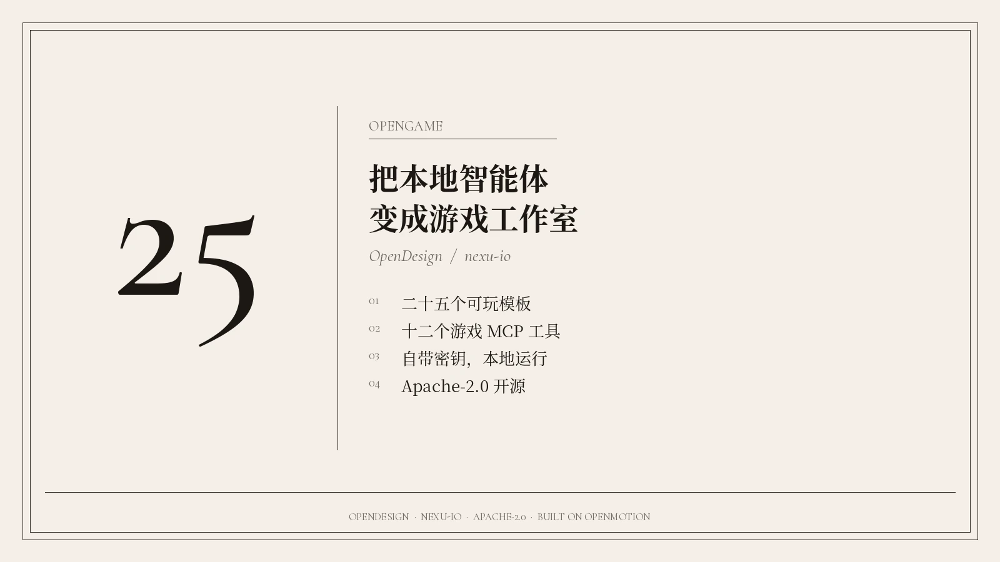

OpenGame 是 OpenDesign（GitHub 组织 nexu-io）做的一套本地游戏工作室。它把 Claude Code、Codex、DeepSeek Harness 这类编程智能体，接到本地的 Game Studio 和一组 MCP 工具上：你可以从一句话想法开始，也可以从仓库里的 25 个可玩模板出发，改画风、改题材，做成 HTML5 或 Three.js 的 3D 游戏，以及 9:16 竖屏小游戏。代码以 Apache-2.0 发布。仓库简介把自己称作「面向智能体的 Unity / Unreal」和「首个 Super Game Agent」，并写有「100+ 款可改的爆款游戏」——这些都是原文的自我表述；正文和模板目录写的是 25 个内置可玩模板。
本页根目录代码按 Apache-2.0 转载官方简体中文 README、英文原文与许可证原文。Studio 目录许可证同为 Apache-2.0，版权行作 Copyright 2026 HeyGen, Inc.。第三方模板封面、社区作品截图、人物或角色图与品牌徽章均不转载。Higgsfield 手册、Three.js、KayKit 角色包以及致谢里的其他组件，各依其原许可。
这是什么
按官方 README 的说法，OpenGame 想解决的是一件很具体的事：让本地编程智能体不只写出一段能跑的代码，而是沿着「做游戏 → 校验 → 试玩 → 截封面 → 录预告片 → 放到本地目录」这条链路走完。游戏本身被写成可检查的工程：index.html、确定性的 logic.js、3D 项目内置 Three.js，再加上 design/plan.md、design/style.md、design/assets.csv、design/verification.md 这类设计文档。所谓 Remix，是在保留已经写好的操控和胜负规则的前提下，派生一份可编辑草稿；所谓 Re-style，是在不改物理和输赢循环的情况下换世界观、角色、画风和配乐。
素材生成走的是「自备密钥」（BYOK）的模型网关，也可以完全用代码里的 Canvas、SVG、程序纹理和 Web Audio 来做，不调用外部模型。官方还提供可选的 OpenDesign Go 订阅，用来统一接入多家模型；其中的折扣和免费模型清单，均为原文自报，本页不作核对。
仓库创建时间为 2026-11-25 18:35:45（新加坡时间，由仓库页记录换算）。2026-11-28 读取仓库首页时，星标计数为 2,320，关注者为 8。这些数字会变。
它和 OpenMotion 的关系
OpenGame 不是从零另起的一套编辑器。根目录 package.json 的 name 仍是 openmotion，版本是 0.0.1，并写明 Node.js >=22.18.0；Hyperframes 及相关包钉在 0.9.7，与 OpenDesign 的 OpenMotion 相同。MCP 工具也沿用 openmotion_game_* 这个命名，官方的解释是为了让已有宿主和适配器继续兼容。Studio 目录的许可证与 OpenMotion 一样，是 Apache-2.0，版权行写着 Copyright 2026 HeyGen, Inc.。安装说明里还指向 OpenMotion 的旧版指南，作为兼容参考。
可以把它看成 OpenMotion 在游戏方向上的展开：同一套本地工作室骨架，把「做片子」换成「做可玩游戏」。
25 个内置模板
官方正文写明内置 25 款可玩游戏，目录在 templates/games/。下面这张表按官方简体中文 README 的目录抄录，简介也来自原文。仓库首页 README 里出现的模板路径，与这 25 个名字一致。本页没有打开每个目录逐一试玩，也没有转载封面图。
| 游戏 | 类型 | 画风 | 屏幕 | 简介（原文） | 目录 |
|---|---|---|---|---|---|
| 弹弓攻城（Castle Crush） | 休闲 | 动漫 | 9:16 竖屏 | 弹弓拉弓投石击倒木石城塔，每关三发共四关 | templates/games/castle-crush/ |
| 彗星守卫（Comet Guard） | 射击 | 极简 | 16:9 横屏 | 驾驶拦截机击碎熔岩彗星，守护轨道空间站 | templates/games/comet-guard/ |
| 像素漂移冲刺（Drift Dash） | 竞速 | 体素 | 9:16 竖屏 | 单手按住左右漂移，三圈击败三辆 AI 赛车 | templates/games/drift-dash/ |
| 草原军团（Gate Legion） | 休闲 | 像素 | 9:16 竖屏 | 算术门军团倍增与终点决战 | templates/games/gate-legion/ |
| 符花庭园（Glyph Garden） | 休闲 | 动漫 | 16:9 横屏 | 奇幻月光花园三消连击解谜 | templates/games/glyph-garden/ |
| 海港突击（Harbor Skirmish） | 射击 | 3D | 16:9 横屏 | 手绘风格 3D 第一人称海岛射击，带滑铲与抓钩 | templates/games/harbor-skirmish/ |
| 景阳冈（Jingyang Ridge） | 休闲 | 动漫 | 16:9 横屏 | 水墨武松打虎 Boss 战：识破招式前摇、闪避反击 | templates/games/jingyang-ridge/ |
| 星港三线炮台（Lane Turret） | 射击 | 像素 | 9:16 竖屏 | 三线炮台瞄准射击、收集卡牌坚守十波 | templates/games/lane-turret/ |
| 灯笼跳跃（Lantern Hop） | 平台 | 像素 | 16:9 横屏 | 像素狐狸月夜屋檐无尽二段跳跑酷 | templates/games/lantern-hop/ |
| 最后的光（Last Light） | 恐怖 | 极简 | 16:9 横屏 | 废弃校园手电筒寻钥逃生 | templates/games/last-light/ |
| 灯塔手记（Lighthouse Log） | 视觉小说 | 动漫 | 16:9 横屏 | 七个暴风雨夜的燃料分配与电台道德抉择 | templates/games/lighthouse-log/ |
| 合成小烘焙（Merge Bakery） | 休闲 | 动漫 | 9:16 竖屏 | 烘焙面团、拖拽合成点心并在限时内完成订单 | templates/games/merge-bakery/ |
| 霓虹漂移（Neon Drift） | 竞速 | 3D | 16:9 横屏 | 赛博霓虹雨夜高架车流穿梭与氮气加速 | templates/games/neon-drift/ |
| 夜行列车的信（Night Train Letters） | 视觉小说 | 极简 | 16:9 横屏 | 雨夜海滨列车的温情分支文字冒险 | templates/games/night-train/ |
| 潜望深渊（Periscope Depth） | 射击 | 极简 | 16:9 横屏 | 潜艇巡航：潜望镜发射鱼雷，下潜躲避声呐深水炸弹 | templates/games/periscope-depth/ |
| 熔金拔针（Pin Rescue） | 休闲 | 极简 | 9:16 竖屏 | 拔针混合水火、避开岩浆赢取金币的五关解谜 | templates/games/pin-rescue/ |
| 屋顶咖啡（Rooftop Roast） | 休闲 | 极简 | 16:9 横屏 | 可换品牌的门店营销小游戏（原文称改一个 SHOP 对象即可换皮） | templates/games/rooftop-roast/ |
| 霓虹天际跑者（Sky Runner） | 竞速 | 3D | 9:16 竖屏 | 赛博 3D 悬浮滑板变道跑酷与吃币加速 | templates/games/sky-runner/ |
| 天际快递员（Skyline Courier） | 平台 | 3D | 16:9 横屏 | 3D 赛博楼顶蹬墙跳与 90 秒限时派送 | templates/games/skyline-courier/ |
| 史莱姆膨胀城（Slime Swell） | 休闲 | 极简 | 9:16 竖屏 | 60 秒吞噬城市物品、击败三名对手史莱姆 | templates/games/slime-swell/ |
| 色环归位（Sort Stack） | 休闲 | 极简 | 9:16 竖屏 | 同色圆环归柱解谜，支持撤销，挑战五关计时 | templates/games/sort-stack/ |
| 叠叠月（Stack the Moon） | 休闲 | 极简 | 16:9 横屏 | 单指精准叠起月光天文台，连击完美落位 | templates/games/stack-the-moon/ |
| 星辉堡垒（Starlight Bastion） | 射击 | 体素 | 16:9 横屏 | 五波体素敌人晶核防卫战，局间升级 | templates/games/starlight-bastion/ |
| 破潮者（Tidebreaker） | 竞速 | 3D | 16:9 横屏 | 风暴群岛 3D 快艇跳浪与限时过关竞速 | templates/games/tidebreaker/ |
| 倾斜神庙（Tilt Temple） | 休闲 | 3D | 9:16 竖屏 | 3D 悬浮迷宫拖动倾斜滚球，拿钥匙闯关 | templates/games/tilt-temple/ |
横屏模板里既有快艇竞速、体素塔防、楼顶跑酷，也有视觉小说和恐怖逃生；竖屏模板则更靠近常见的休闲小游戏和试玩广告，例如算术门、拔针解谜、合成餐饮。官方把一部分竖屏模板标成可直接做 9:16 试玩广告的起点。这些玩法描述都来自模板目录文案，不是试玩记录。
怎么接到本地智能体
官方给出三条起步路径。一是把一段固定指令交给本地 Agent，让它按 docs/opengame-setup.md 完成接入，并打开 Game Studio 的模板库。二是用 Vercel 的 Skills CLI 安装主技能 opengame（它会引导到 openmotion-game 和一组工程手册）：
npx skills add https://github.com/nexu-io/opengame/tree/skills --skill opengame三是从源码在本地启动 Studio。环境要求写的是 Git、Git LFS、npm，以及 Node.js 22.18+；同一段文字又写 CI 锁定 Node.js 26.11.1。这两处并存于官方文档，本页不作取舍。启动命令在官方 README 里是浅克隆仓库、跳过 LFS smudge、npm ci、npm run build:studio，然后 npm start。原文还说：首次试玩或 Remix 时才下载所选模板的素材，Tidebreaker 可离线试玩。这些运行效果均为原文自报。
README 配图的说明文字列出了 22 个本地 Agent，与正文「22 个」一致；仓库简介则写作「20+」。名字如下（按原文顺序，未逐一验证接入）：WorkBuddy、Codex CLI、Claude Code、OpenCode、Hermes、Antigravity、Gemini CLI、Grok Build、Kimi CLI、Cursor Agent、Qwen Code、Qoder CLI、GitHub Copilot、Pi、Kiro CLI、Kilo、Mistral Vibe、DeepSeek TUI、Reasonix、Aider、Devin、Trae CLI。
通用的本地 MCP 配置把服务器命名为 openmotion，用 Node 运行仓库里的 mcp.ts，并把 MOTION_DATA_DIR 指到仓库外面的数据目录，以免游戏、生成素材和密钥跟仓库更新混在一起。Claude Code、Codex、DeepSeek Harness、WorkBuddy 另有各自的接入说明，见 接入指南。
12 个游戏 MCP 工具
官方列出 12 个以 openmotion_game_* 开头的工具，下面按 README 表格抄录。本页没有实际调用这些工具。
| 工具 | 作用（据原文） |
|---|---|
openmotion_game_create | 新建游戏草稿（2D、内置 Three.js 的 3D，或 9:16 试玩广告）并返回完整任务说明 |
openmotion_game_get | 读取游戏卡片、生命周期状态和文件清单 |
openmotion_game_read_file | 读取游戏工程里的源码或设计文件 |
openmotion_game_write_files | 批量写入源码和设计文件（原文：每个自有工程最多 100 个文本文件 / 8 MiB） |
openmotion_game_update_meta | 合并标题、简介、操控说明、封面路径和本地化元数据 |
openmotion_game_validate | 检查 index.html、CDN 策略、确定性逻辑导出，并做 50 tick 冒烟测试 |
openmotion_game_simulate | 三档无头数值仿真（高手参考路径获胜、弱路径吃力、挂机路径失败） |
openmotion_game_playtest | 用无头 Chrome 做真实键鼠触控试玩，并检查 390×844 布局与控制台 |
openmotion_game_capture_cover | 从游戏画布截取 1280×720 PNG 封面 |
openmotion_game_trailer | 录下无头实机片段，合成约 19 秒的可编辑 MP4 预告片 |
openmotion_game_set_status | 切换生命周期状态（building / ready / failed） |
openmotion_game_publish | 再次校验后发布到本地 Game Studio 目录 |
此外还有 openmotion_media_use（查看已配置的 BYOK 模型）和 openmotion_assets_use（生成图片、音乐、语音、视频，以及一键发布网页）。官方又写有 18 份游戏工程手册；但 README 的手册表里，实际列出的文件名是 16 个，分别归在游戏设计、3C 与手感、画面与声音、试玩广告与质量门禁四组。本页按表格计为 16 份，没有另开技能目录做清点。
素材、校验和发布
模型网关把「关键插图、立绘、贴图」「背景音乐」「角色和旁白配音」「过场与运动镜头」「3D 场景」分开配置。原文推荐的模型包括 GPT Image 2.6、Seedream 5.5 / 5.0 Flash、Nano Banana 2、FLUX、Codex Image、ElevenLabs Music v2、Suno v4、ElevenLabs v3、BytePlus TTS 2、Kokoro、Wan 2.7、Seedance 2.5 等；没有密钥时，则回退到程序生成的 Canvas / SVG、Web Audio 和 Three.js 几何。音效默认就在游戏代码里用 Web Audio 合成。这些模型能否按文档接通，本页没有实测。
校验链路是原文着墨最多的部分之一：先做静态检查和 50 tick 冒烟测试，再跑三档确定性仿真，再用无头 Chrome 做真实输入试玩，最后截封面、录预告片。文中出现的「每 tick 少于 5 毫秒」「少于 2500 tick」「约 19 秒预告片」等数字，均为原文自报。
发布方面，当前可用的路径是：发到本地 Studio 目录、导出可分享的网页包、打出单文件 9:16 试玩广告，以及导出可供人工封装的 HTML5 工程。微信小游戏、抖音小游戏、TikTok、小红书、itch.io、Poki、CrazyGames 的引导式上架，以及「一百个可赚钱的小游戏模板」、多模型对战游戏场，都写在路线图里，属于原文规划，本页没有核对进展。
技术栈
按 README 的源码地图和根目录 package.json，Studio 界面是 React 19、TypeScript 5.9、Vite 6、Tailwind CSS 4 和 Zustand；游戏运行与校验走 Node.js、原生 HTTP、Puppeteer Core / Chrome 和一套确定性仿真器；预告片合成会用到 FFmpeg。包管理清单里还能看到 GSAP 3.15.0、Hyperframes 0.9.7，以及用于小游戏封装的 miniprogram-ci。package.json 没有单独的 license 字段，许可以根目录 LICENSE 为准。
许可
2026-11-28 打开根目录 LICENSE，文本为标准 Apache License 2.0；附录版权行仍是 Copyright [yyyy] [name of copyright owner] 占位符，没有填写版权人。同一天打开 studio/LICENSE，同为 Apache-2.0，文末版权行是 Copyright 2026 HeyGen, Inc.。
仓库还附了几份第三方许可，需要和根目录代码分开看：
- skills/openmotion-game/LICENSE-HIGGSFIELD：MIT，Copyright (c) 2026 Higgsfield AI。配套的 PROVENANCE 写明，部分游戏手册移植自 Higgsfield Websites handbook，另有若干篇是 OpenMotion 一侧后来自己写的。
- templates/game-kits/vendor/LICENSE-three.txt：Three.js 的 MIT 许可，Copyright © 2010-2024 three.js authors。
- templates/game-kits/characters/LICENSE-KayKit.txt：KayKit Adventurers Character Pack，Kay Lousberg，CC0。
官方致谢里还提到 Cocos Creator / Cocos Engine、MCP SDK、Vercel Skills CLI、FFmpeg、GSAP、DiceBear 的 Micah 头像风格（CC BY 4.0）以及 Albert Sans、IBM Plex Mono、Instrument Serif（SIL OFL 1.1）等。其中 Cocos、MCP SDK 与 Skills CLI 的具体许可证，原文写的是 MIT 或「MIT / Apache-2.0」，本页没有再打开那些上游仓库核对。GSAP 在致谢里只出现名字，没有单独说明许可。社区展示墙里的游戏只外链到作者原帖，官方也写明不复制第三方源码；本页同样不转载那些截图。
代码开源，不等于用它做出来的游戏、素材或调用的模型可以任意商用。密钥、平台上架和第三方素材，仍要看各自的条款。
原文里需要留意的地方
以下事项按仓库文档整理，不作为实测结论。
- 仓库简介写「100+ 款可改的爆款游戏」，官方正文和模板目录写的是 25 个内置可玩模板。本页以正文目录为准。
- 正文写有 18 份专业手册，README 表格列出的文件名是 16 个。本页按表格计，没有另做目录清点。
- 仓库简介写「20+」个编程智能体，正文写 22 个，配图说明文字也正好列出 22 个名字。未逐一验证接入。
package.json要求 Node.js 22.18+，安装说明又写 CI 锁定 26.11.1。两处并存，本页未打开工作流文件核对。- 「3A 级 3D 大作」「首个 Super Game Agent」、试玩广告和平台变现效果、校验耗时、Tidebreaker 可离线试玩、以及 OpenDesign Go 的促销与免费模型，均为原文自报。本页没有在本地跑通 Studio，也没有逐一试玩这 25 个模板。
- 微信、抖音、TikTok 等上架路径，以及「一百个可赚钱模板」，写在路线图中，属于规划。
相关阅读
- OpenMotion：开源的动态影像工作室 — 同一制作方、同一套 Studio 骨架在影像方向上的项目。
- nexu-io/open-design — OpenDesign 主仓库。
- HeyGen Hyperframes — Studio 编辑与预告片合成的上游基础。
附录 A、官方简体中文 README
以下为 2026-11-28 自仓库 README.zh-CN.md 抄录的官方简体中文说明。宣传主图、模板封面、社区作品截图、贡献者头像墙和星标趋势图已去掉，只保留文字、表格与代码。文中的定位、数字、模型和促销信息，均为原文自报。
OpenGame
首个 Super Game Agent —— 开源全栈 AI 游戏创作工作台
OpenGame —— 首个 Super Game Agent。用你的 AI Agent 制作、一键复刻并发布 3D 与 9:16 可玩游戏。
Node.js 22.18+ Apache 2.0 许可证 OpenDesign 出品
OpenDesign Go 模型订阅 加入 OpenGame Discord 社区 加入 OpenGame 飞书群 OpenDesign 官方 X 账号 @OpenDesignHQ OpenDesign 开发者 X 账号 @OpenDesignDevs OpenDesign 的 YouTube 频道
快速开始 · 支持的 Agent · 可玩游戏模板 · 核心能力 · 发布与变现 · 接入与 MCP · 社区共建
认识 OpenGame
OpenGame 是首个开源全栈 Super Game Agent——把 DeepSeek（DSH）、Claude Code、Codex 或任意本地编程 Agent 变成一座开源 AI 版虚幻引擎 / Unity 与全栈游戏工作台，从一句话创意出发，既能打造 3A 级 3D 大作，也能跑通 爆款小游戏上架变现 全链路。
- 🚀 用你的 Agent 打造 3A 级大作。 直接用 DeepSeek（DSH）、Claude、Codex、Gemini 驱动代码、3D 场景、美术、配乐与配音全栈生产——从一句话想法到可玩的 3D 动作、竞速与大世界体验。
- 🎮 一键复刻 & 风格化任何游戏。 内置 25 款可玩游戏模板（3D、体素、像素、动漫及 9:16 爆款小游戏 / 试玩广告），源码与设计文档全开放；保留成熟核心玩法，几分钟完成换皮与画风重构。
- 💰 做能赚钱的游戏：制作 → 验证 → 上架变现。 自动完成规则校验、仿真试玩、封面截图与实机预告片；一键生成在线试玩链接或单文件 9:16 试玩广告，并打通 微信小游戏 / 抖音 / TikTok 等平台上架变现路径。
- 🔓 全栈开源（BYOA + BYOK）。 代码、美术、视频、音乐、配音与 Three.js 3D 全部开源，支持接入你常用的 本地 Agent 与自有 API Key，也可一键连接 OpenDesign Go（黑五期间享最低折扣，DeepSeek V4.1 Flash、Seedream 等模型免费用）。
⚡ 快速开始
1. 一句话交给你的本地 Agent
把下面这段指令发给 DeepSeek TUI / Harness、Claude Code、Codex、WorkBuddy、Cursor、Gemini CLI 或任意 22 个本地 Agent：
请按 https://github.com/nexu-io/opengame/blob/main/docs/opengame-setup.md 把 OpenGame 接入当前 Agent，并打开 Game Studio 模板库。
2. 通过 Skills CLI 安装 OpenGame 主 Skill
使用 Skills CLI 安装 OpenGame 主入口 Skill（opengame，自动引导本地接入并路由到 openmotion-game 及 18 份涵盖 3C 手感、2D/3D 动画、试玩广告规范与质量门禁的工程手册）：
npx skills add https://github.com/nexu-io/opengame/tree/skills --skill opengame
Skills CLI 只安装工作流指引（也可按需单独安装
--skill openmotion-game）；请结合下方本地运行与 MCP 配置，让 Agent 能够直接调用 12 个openmotion_game_*工具并打开 Game Studio。
3. 从源码在本地启动 OpenGame Studio
环境要求：Git、Git LFS、npm、Node.js 22.18+（CI 锁定 Node.js 26.11.1）。启动后即可浏览模板目录，首次试玩或 Remix 时只下载所选模板的素材。Tidebreaker 可直接离线试玩。
git -c filter.lfs.process= -c filter.lfs.smudge= -c filter.lfs.required=false clone --depth 1 --single-branch --branch main https://github.com/nexu-io/opengame.git
cd opengame
git lfs install --local --skip-smudge
npm ci
npm run build:studio
npm start
支持 22 个本地 Agent（BYOA） · 选择你的 Agent
🕹️ 内置可玩游戏模板与示例
OpenGame 在 templates/games/ 中内置了 25 款开箱即玩的完整游戏工程，全部包含 HTML5 / Three.js 源码、封面、操控说明与中英双语元数据。在 Game Studio 里可直接试玩，一键 Remix 复刻，或一键换画风 / 换题材 / 换角色做成属于你的游戏。
3D、体素与动作游戏（16:9 横屏）
|
（原文此处为模板封面，本页不转载：破潮者 Tidebreaker — 3D 风暴群岛快艇竞速） 破潮者 · Tidebreaker · 3D · 竞速 · Three.js驾驶快艇穿越风暴群岛，跃过浪尖、避开暗礁，在倒计时结束前冲过八个检查点。 查看源码与 DESIGN.md → |
（原文此处为模板封面，本页不转载：星辉堡垒 Starlight Bastion — 体素太空晶核防御射击） 星辉堡垒 · Starlight Bastion · 体素 · 射击 · 肉鸽升级守护发光的星核，击退五波体素入侵者，每波结束后三选一强化技能。 查看源码与 DESIGN.md → |
|
（原文此处为模板封面，本页不转载：天际快递员 Skyline Courier — 3D 赛博高楼跑酷） 天际快递员 · Skyline Courier · 3D · 平台跑酷 · 赛博朋克在雨夜霓虹摩天楼顶奔跑、二段跳与蹬墙飞跃，90 秒内送达最后三件包裹。 查看源码与 DESIGN.md → |
（原文此处为模板封面，本页不转载：霓虹漂移 Neon Drift — 3D 赛博夜路高架飙车） 霓虹漂移 · Neon Drift · 3D · 竞速 · 赛博霓虹在雨后霓虹高架高速穿梭车流，极限擦车积攒氮气加速，刷新行驶距离纪录。 查看源码 → |
|
（原文此处为模板封面，本页不转载：彗星守卫 Comet Guard — 轨道空间站太空射击） 彗星守卫 · Comet Guard · 射击 · 太空防御驾驶轨道拦截机在手绘星空中击碎熔岩彗星，守护发光空间站撑过递增波次。 查看源码 → |
（原文此处为模板封面，本页不转载：海港突击 Harbor Skirmish — 3D 第一人称海岛射击） 海港突击 · Harbor Skirmish · 3D FPS · 抓钩与滑铲风格化 3D 第一人称海岛射击，支持二段跳、滑铲、冲刺与抓钩机动。 查看源码 → |
风格化、叙事与氛围游戏（16:9 横屏）
|
（原文此处为模板封面，本页不转载：符花庭园 Glyph Garden — 二次元奇幻三消） 符花庭园 · Glyph Garden · 二次元 · 消除 · 奇幻交换月光花瓣触发连锁绽放，在 24 步内冲刺 2,200 分唤醒失落的庭园。 查看源码 → |
（原文此处为模板封面，本页不转载：灯笼跳跃 Lantern Hop — 像素奇幻屋檐跑酷） 灯笼跳跃 · Lantern Hop · 像素 · 平台跑酷 · 东方奇幻操控围着围巾的像素小狐狸跃过月夜飞檐，二段跳收集发光纸灯笼。 查看源码 → |
|
（原文此处为模板封面，本页不转载：灯塔手记 Lighthouse Log — 动漫风风暴生存叙事） 灯塔手记 · Lighthouse Log · 动漫 · 视觉小说 · 生存在连续七个暴风雨夜守护海崖灯塔，分配最后燃料，在电台求救间做出抉择。 查看源码 → |
（原文此处为模板封面，本页不转载：最后的光 Last Light — 手电筒潜行恐怖逃生） 最后的光 · Last Light · 恐怖 · 氛围逃生在手电熄灭前于废弃校园找齐三把钥匙，同时用光束压制紧追不舍的暗影。 查看源码 → |
|
（原文此处为模板封面，本页不转载：夜行列车的信 Night Train Letters — 互动分支叙事） 夜行列车的信 · Night Train Letters · 视觉小说 · 分支剧情三封未寄出的信、一列驶向大海的雨夜列车，用纯 HTML 讲述细腻分支故事。 查看源码 → |
（原文此处为模板封面，本页不转载：叠叠月 Stack the Moon — 一键月光叠塔） 叠叠月 · Stack the Moon · 休闲 · 单指街机在云海之上精准叠起月光天文台，连续完美落位修复塔身并冲入星空。 查看源码 → |
9:16 竖屏爆款小游戏与试玩广告模板
专为单手触屏、首帧即玩、高留存短局与小游戏 / 试玩广告商业变现打造：
|
（原文此处为模板封面，本页不转载：草原军团 Gate Legion — 9:16 算术门跑酷） 草原军团 · Gate Legion · 9:16 · 算术门军团跑酷左右拖动选择 +10 / ×2 算术门壮大军团，在终点迎战敌军。查看源码 → |
（原文此处为模板封面，本页不转载：熔金拔针 Pin Rescue — 9:16 拔针解谜） 熔金拔针 · Pin Rescue · 9:16 · 拔针物理解谜拔出机关针混合水流与熔岩，化解陷阱并在五道关卡中顺利夺金。 查看源码 → |
|
（原文此处为模板封面，本页不转载：霓虹天际跑者 Sky Runner — 9:16 3D 滑板跑酷） 霓虹天际跑者 · Sky Runner · 9:16 · 3D 三道跑酷切换赛道、拾取金币、躲避无人机，在不断加速的霓虹高空疾驰。 查看源码 → |
（原文此处为模板封面，本页不转载：史莱姆膨胀城 Slime Swell — 9:16 城市吞噬大作战） 史莱姆膨胀城 · Slime Swell · 9:16 · 吞噬成长 .io吞噬比自己小的车辆与建筑，60 秒内体积超越三名竞争对手。 查看源码 → |
展开查看全部 25 款内置可玩游戏模板
| 游戏名称 | 类型 | 画风 | 屏幕方向 | 简介 | 源码目录 | | --- | --- | --- | --- | --- | --- | | **弹弓攻城 (Castle Crush)** | 休闲 | 动漫 | 9:16 竖屏 | 弹弓拉弓投石击倒木石城塔，每关三发共四关 | [castle-crush](https://github.com/nexu-io/opengame) | | **彗星守卫 (Comet Guard)** | 射击 | 极简 | 16:9 横屏 | 驾驶拦截机击碎熔岩彗星，守护轨道空间站 | [comet-guard](https://github.com/nexu-io/opengame) | | **像素漂移冲刺 (Drift Dash)** | 竞速 | 体素 | 9:16 竖屏 | 单手按住左右漂移，三圈击败三辆 AI 赛车 | [drift-dash](https://github.com/nexu-io/opengame) | | **草原军团 (Gate Legion)** | 休闲 | 像素 | 9:16 竖屏 | 爆款算术门军团倍增与终点决战 | [gate-legion](https://github.com/nexu-io/opengame) | | **符花庭园 (Glyph Garden)** | 休闲 | 动漫 | 16:9 横屏 | 奇幻月光花园三消连击解谜 | [glyph-garden](https://github.com/nexu-io/opengame) | | **海港突击 (Harbor Skirmish)** | 射击 | 3D | 16:9 横屏 | 手绘风格 3D 第一人称海岛射击，带滑铲与抓钩 | [harbor-skirmish](https://github.com/nexu-io/opengame) | | **景阳冈 (Jingyang Ridge)** | 休闲 | 动漫 | 16:9 横屏 | 水墨武松打虎 Boss 战：识破招式前摇、闪避反击 | [jingyang-ridge](https://github.com/nexu-io/opengame) | | **星港三线炮台 (Lane Turret)** | 射击 | 像素 | 9:16 竖屏 | 三线炮台瞄准射击、收集卡牌坚守十波 | [lane-turret](https://github.com/nexu-io/opengame) | | **灯笼跳跃 (Lantern Hop)** | 平台 | 像素 | 16:9 横屏 | 像素狐狸月夜屋檐无尽二段跳跑酷 | [lantern-hop](https://github.com/nexu-io/opengame) | | **最后的光 (Last Light)** | 恐怖 | 极简 | 16:9 横屏 | 废弃校园手电筒寻钥逃生 | [last-light](https://github.com/nexu-io/opengame) | | **灯塔手记 (Lighthouse Log)** | 视觉小说 | 动漫 | 16:9 横屏 | 七个暴风雨夜的燃料分配与电台道德抉择 | [lighthouse-log](https://github.com/nexu-io/opengame) | | **合成小烘焙 (Merge Bakery)** | 休闲 | 动漫 | 9:16 竖屏 | 烘焙面团、拖拽合成点心并在 90 秒内完成订单 | [merge-bakery](https://github.com/nexu-io/opengame) | | **霓虹漂移 (Neon Drift)** | 竞速 | 3D | 16:9 横屏 | 赛博霓虹雨夜高架车流穿梭与氮气加速 | [neon-drift](https://github.com/nexu-io/opengame) | | **夜行列车的信 (Night Train Letters)** | 视觉小说 | 极简 | 16:9 横屏 | 雨夜海滨列车的温情分支文字冒险 | [night-train](https://github.com/nexu-io/opengame) | | **潜望深渊 (Periscope Depth)** | 射击 | 极简 | 16:9 横屏 | 潜艇巡航：潜望镜发射鱼雷，下潜躲避声呐深水炸弹 | [periscope-depth](https://github.com/nexu-io/opengame) | | **熔金拔针 (Pin Rescue)** | 休闲 | 极简 | 9:16 竖屏 | 拔针混合水火、避开岩浆赢取金币的五关解谜 | [pin-rescue](https://github.com/nexu-io/opengame) | | **屋顶咖啡 (Rooftop Roast)** | 休闲 | 极简 | 16:9 横屏 | 可一键换品牌的门店营销小游戏（修改一个 `SHOP` 对象即可换皮） | [rooftop-roast](https://github.com/nexu-io/opengame) | | **霓虹天际跑者 (Sky Runner)** | 竞速 | 3D | 9:16 竖屏 | 赛博 3D 悬浮滑板变道跑酷与吃币加速 | [sky-runner](https://github.com/nexu-io/opengame) | | **天际快递员 (Skyline Courier)** | 平台 | 3D | 16:9 横屏 | 3D 赛博楼顶蹬墙跳与 90 秒限时派送 | [skyline-courier](https://github.com/nexu-io/opengame) | | **史莱姆膨胀城 (Slime Swell)** | 休闲 | 极简 | 9:16 竖屏 | 60 秒吞噬城市物品、击败三名对手史莱姆 | [slime-swell](https://github.com/nexu-io/opengame) | | **色环归位 (Sort Stack)** | 休闲 | 极简 | 9:16 竖屏 | 同色圆环归柱解谜，支持撤销，挑战五关计时 | [sort-stack](https://github.com/nexu-io/opengame) | | **叠叠月 (Stack the Moon)** | 休闲 | 极简 | 16:9 横屏 | 单指精准叠起月光天文台，连击完美落位 | [stack-the-moon](https://github.com/nexu-io/opengame) | | **星辉堡垒 (Starlight Bastion)** | 射击 | 体素 | 16:9 横屏 | 五波体素敌人晶核防卫战 + 局间升级 | [starlight-bastion](https://github.com/nexu-io/opengame) | | **破潮者 (Tidebreaker)** | 竞速 | 3D | 16:9 横屏 | 风暴群岛 3D 快艇跳浪与限时过关竞速 | [tidebreaker](https://github.com/nexu-io/opengame) | | **倾斜神庙 (Tilt Temple)** | 休闲 | 3D | 9:16 竖屏 | 3D 悬浮迷宫拖动倾斜滚球，拿钥匙闯三关 | [tilt-temple](https://github.com/nexu-io/opengame) |✨ 核心能力
1. 一键复刻与一键风格化 —— 游戏即开源工程代码
从空白提示词让大模型直接写出好玩、不崩的游戏门槛极高。OpenGame 把可验证的游戏工程骨架与题材、画风、角色和素材解耦：
- 每一款游戏都是清晰可编辑的源码：
index.html、确定性核心逻辑logic.js、3D 场景内置 Three.js，以及结构化设计文档（design/plan.md、design/style.md、design/assets.csv、design/verification.md）。 - 一键 Remix 复刻：在 Game Studio 点击任意模板的 Remix（或在 Agent 对话中指定模板），即可派生独立可编辑草稿，完整继承操控、数值配置表与自动化测试钩子。
- 一键 Re-style 风格化：保留已经验证过的物理手感与胜负循环，自由替换世界观、角色、美术风格与配乐——DeepSeek 等低成本模型也能稳定改出高质量成品；Claude Fable 5.2、Opus、Codex、Gemini 等顶级模型更可直接从零创作复杂 3D 游戏。
直接在 Agent 中试试这些提示词：
# 1. 一键复刻 + 换画风（极适合 DeepSeek 等高性价比模型快速出活）
使用 openmotion-game 复刻「灯笼跳跃 (Lantern Hop)」模板，把它风格化为赛博雨夜猫咪跑酷：保留原有二段跳手感与计分循环，把狐狸和灯笼换成霓虹机械猫与全息电池，生成新的角色立绘和合成波 BGM，最后完成校验、无头试玩并截取新封面。
# 2. 制作可直接投放的 9:16 竖屏试玩广告 (Playable Ad)
使用 openmotion-game 创建一个 9:16 竖屏试玩广告（playableAd: true），题材为中世纪塔防手游：首帧即玩并带手势引导、25 秒爽快波次战斗、结尾展示带 App Store / Google Play 转化按钮的结束页。完成 390x844 试玩验证并打包为单文件 HTML。
# 3. 从零制作 3D 原创游戏（适合 Claude Fable 5.2 / Opus / Codex / Gemini）
使用 openmotion-game 从零制作一款 3D 国风武侠 Boss 决斗游戏（style: "3d"），场景设在黄昏迷雾竹崖，包含弹反判定、闪避无敌帧、体力管理与两阶段 Boss 战。运行三档仿真与无头浏览器试玩，截取 1280x720 封面并自动录制 19 秒实机预告片。
2. 全栈多模态素材生成（BYOK）
一款完整的游戏离不开主视觉、角色立绘、3D 无缝贴图、背景音乐、角色配音和清脆音效。OpenGame 通过内置 Model Gateway 将多模态生成直接接入游戏工程，同时让 API Key 留在本地工作区，不写入游戏源码。
（原文插图未转载：GPT Image）
（原文插图未转载：Seedream）
（原文插图未转载：Nano Banana 2）
（原文插图未转载：FLUX）
（原文插图未转载：Codex Image）
（原文插图未转载：Seedance）
（原文插图未转载：Wan）
（原文插图未转载：Suno）
（原文插图未转载：ElevenLabs）
（原文插图未转载：BytePlus Voice）
| 游戏素材层 | 推荐模型（在 Model Settings 配置后自动发现） | 零 Key / 代码内建降级方案 |
|---|---|---|
| 🖼️ 主视觉、角色立绘、精灵与贴图 | GPT Image 2.6（支持参考改图与透明底）、Seedream 5.5 / 5.0 Flash、Nano Banana 2、FLUX、Codex Image |
高质量 Canvas / SVG 程序化绘制与程序纹理 |
| 🎵 背景音乐（菜单 / 关卡 / Boss 战） | ElevenLabs Music v2（no vocals 纯音乐循环）、Suno v4 |
Web Audio API 实时合成配乐循环 |
| 🎙️ 角色语音与旁白播报 | ElevenLabs v3（多语种）、BytePlus TTS 2（中文语音）、Kokoro |
风格化剧情字幕与对话框 |
| 🎬 开场过场与动效片段 | Wan 2.7、Seedance 2.5（短时 I2V 动画片段） |
引擎内实时运镜与开场动画 |
| 🔊 打击、跳跃、金币与 UI 音效 | 直接在游戏代码中通过 Web Audio API 实时合成 | 同左（零延迟、零外链资源） |
| 🧊 3D 场景与模型 | 内置 Three.js + CC0 套件 + 3D 网关预留槽位（接入即自动发现） | Three.js 程序化建模、光照与着色器 |
本地开源创作栈本身完全免费，不收软件订阅费。你可以在 Model Settings 填入自有供应商 Key、接入 OpenDesign Go 统一订阅，或完全使用纯代码零成本方案生成游戏。模型目录 · 供应商配置指南
3. 自动化游戏 QA、三档数值仿真与自动预告片
不靠盲猜「代码大概能跑」——OpenGame 在交付可玩成品前内建完整自动化验证闭环：
- 静态规范与 50-Tick 逻辑冒烟 (
openmotion_game_validate) —— 校验index.html、资源策略与确定性核心导出，确保单帧逻辑< 5 ms。 - 三档无头数值仿真 (
openmotion_game_simulate) —— 无需拉起浏览器即可自动验证：标准操作路线能达成真正胜利里程碑、弱操作路线会吃力受挫、挂机路线会在< 2500tick 内正常失败。 - 无头 Chrome 真操作试玩 (
openmotion_game_playtest) —— 启动 1–4 个独立浏览器客户端执行真实键鼠/触屏脚本，核验 3C 操控手感、390×844移动端适配、生成素材加载状态，以及控制台/网络零报错。 - 纯画布高清封面截取 (
openmotion_game_capture_cover) —— 在隔离的无头 Chrome 中自动截取1280×720游戏画布 PNG 到assets/cover.png。 - 自动实机预告片 (
openmotion_game_trailer) —— 自动录制 3 段 5 秒1280×720实机片段，合成约 19 秒带封面与「立即游玩」尾板的可编辑视频工程并渲染为 MP4，直接用于社媒宣发。
🚀 端到端分发与变现路径
让做出来的游戏不止停留在本地——能玩、能分享、能上架、能赚钱。
| 环节 | 当前已支持 | 路线图（推进中） |
|---|---|---|
| 本地游玩与模板库 | 一键发布到本地 OpenGame Studio 游戏市场（openmotion_game_publish），支持游玩计数、收藏与一键 Remix |
TOP 100 赚钱小游戏模板专栏，覆盖高变现玩法壳子，拿来即可复刻换皮 |
| 一键公网分享链接 | 登录后通过 OpenDesign Cloud（openmotion_assets_use action="web_publish"）自动重写本地素材路径、压缩资源并生成可分享的在线游玩 URL |
自定义域名与可嵌入试玩卡片 |
| 移动端试玩广告 | 内置 9:16 Playable Ad 模式（playableAd: true）：首帧即玩、手势引导、短关卡、单文件内联 HTML 与 App Store / Google Play 转化卡片 |
主流广告平台一键打包预设（AppLovin / Unity Ads / Meta / TikTok） |
| 小游戏平台上架与变现 | 干净自包含的 HTML5 / JS 工程源码 + 自动录制的实机宣传预告片，方便直接封装投稿与买量宣发 | L1–L4 分级平台上架引导页面与打包 Skill：覆盖微信小游戏、抖音小游戏、TikTok、小红书小工具市场以及 itch.io / CrazyGames / Poki |
| AI 模型游乐场 | 本地单人试玩与已有联机房间的自动入房测试 | 多模型实时游戏对战（AI Arena）——让多个大模型在游戏里同场实时博弈 |
🛠️ 接入配置与 12 个游戏 MCP 工具
接入你的本地 Agent
点击下方图标跳转对应配置，把本地 OpenGame MCP 服务与游戏 Skill 接入你的常用 Agent：
DeepSeek TUI / Harness Claude Code Codex CLI WorkBuddy OpenCode Hermes Antigravity Gemini CLI Grok Build Kimi CLI Cursor Agent Qwen Code Qoder CLI GitHub Copilot Pi Kiro CLI Kilo Mistral Vibe Reasonix Aider Devin Trae CLI
- DeepSeek TUI / Harness · 安装
openmotion-gameSkill，并通过 Cordis 配置连接本地 MCP 工具，或在仓库根目录运行node integrations/dsh/install.ts。DeepSeek Harness 配置指南 - Claude Code · 添加下方 stdio MCP 配置并安装
openmotion-gameSkill，然后执行/mcp确认连接就绪。 - Codex CLI · 在仓库根目录运行
bash scripts/install-motion.command，自动完成本地插件与 MCP 注册。 - WorkBuddy · 导入 Connector 或将下方
mcp.json添加为自定义 MCP 服务。WorkBuddy 接入说明
通用手动 stdio MCP 配置（适用于所有支持 MCP 的客户端）
{
"mcpServers": {
"openmotion": {
"command": "/absolute/path/to/node",
"args": ["--experimental-strip-types", "/absolute/path/to/opengame/mcp.ts"],
"env": {
"MOTION_DATA_DIR": "/absolute/path/to/opengame-data"
}
}
}
}
请将
MOTION_DATA_DIR指向仓库目录之外的绝对路径，确保你的游戏工程、生成素材和 API 密钥与仓库更新完全隔离。完整接入细节见 部署与配置指南 · 系统架构说明。
12 个游戏专用 MCP 工具
OpenGame 通过本地 stdio MCP 暴露完整的游戏开发与测试工具集（沿用 openmotion_game_* 命名空间，确保所有既有宿主与适配器无缝兼容）：
| MCP 工具 | 用途 |
|---|---|
openmotion_game_create |
创建新游戏草稿（支持 2D、内置 Three.js 的 3D，或 9:16 playableAd 试玩广告），返回完整 Agent 指令 |
openmotion_game_get |
读取游戏卡片、当前生命周期状态与全部文件清单 |
openmotion_game_read_file |
读取游戏工程内的任意源码或设计文档 |
openmotion_game_write_files |
批量写入多个游戏源码与设计文件（单次最多 100 个文本文件 / 8 MiB） |
openmotion_game_update_meta |
合并更新标题、简介、操控说明、封面路径及多语言翻译（如 zh-CN） |
openmotion_game_validate |
校验 index.html、资源规范、确定性核心导出并执行 50-tick 逻辑冒烟测试 |
openmotion_game_simulate |
无需浏览器运行三档有界确定性仿真（标准路线通关 / 弱操作受挫 / 挂机失败） |
openmotion_game_playtest |
启动隔离无头 Chrome（1–4 客户端）验证真实操控、390×844 竖屏布局及控制台无报错 |
openmotion_game_capture_cover |
直接截取纯游戏画布的 1280×720 高清 PNG 保存到 assets/cover.png |
openmotion_game_trailer |
后台录制真实玩法片段并合成导出约 19 秒可编辑 MP4 宣传预告片 |
openmotion_game_set_status |
更新游戏构建状态（building、ready、failed） |
openmotion_game_publish |
重新校验并将游戏发布到本地 Game Studio 市场 |
配合 openmotion_media_use（查询已配置的 BYOK 多模态模型）与 openmotion_assets_use（生成图/音/视素材并调用 action: "web_publish" 一键发布在线试玩链接）。完整 MCP 工具契约
游戏工程 Skill 与 18 份专业手册
接入的 Agent 可直接读取 skills/openmotion-game/SKILL.md（或通过 MCP Resource 读取 openmotion://workflow/game/start）以及 18 份游戏工程参考文档：
| 领域 | 参考手册 |
|---|---|
| 立项与玩法设计 | 需求简报标准 · 类型与核心循环 · 设计体系 · 参考拆解与盲区排查 |
| 3C 操控与打击感 | 3C 模块规范 · 手感与打磨细节 · 完整制作流 |
| 美术、2D/3D 与音频 | 风格化指南 · 贴图规范 · 2D 动画 · 3D 动画 · 程序化动效 · 音频与 Web Audio |
| 试玩广告与质量门禁 | 试玩广告完整规范 · 分级质量门禁 · 验收评分标准 |
技术栈与源码导航
| 层级 | 核心技术 | 源码入口 |
|---|---|---|
| OpenGame Studio 界面 | React 19, TypeScript 5.9, Vite 6, Tailwind CSS 4, Zustand | GameStudio.tsx · gameCatalog.ts |
| 游戏运行时与自动 QA | Node.js, 原生 HTTP, Puppeteer Core / Chrome, 确定性仿真器 | game-projects.ts · shared/game-contract.ts · server.ts |
| MCP 与游戏 Skill | 本地 stdio MCP 服务、opengame 主入口 Skill、openmotion-game 工作流及 18 份手册 |
mcp.ts · skills/opengame/SKILL.md · skills/openmotion-game/ |
| 多模态 Model Gateway | BYOK 模型发现、异步任务轮询、素材库与在线分享发布 | gateway/service.ts · gateway/catalog.ts · docs/assets.md |
| 内置游戏模板库 | 25 款独立可玩 HTML5 / Canvas / Three.js 工程与封面 | templates/games/ |
| 实机预告片管线 | 无头实机录屏 + HTML 合成 + FFmpeg MP4 渲染 | docs/usage.md · scripts/verify-export.ts |
🤝 一起共建 OpenGame
欢迎贡献可玩游戏模板、热门小游戏复刻壳子、美术风格指南、微信/抖音/TikTok/itch.io 等平台上架打包脚本，以及 Game Studio 体验优化。
| 贡献方向 | 建议包含内容 |
|---|---|
| 可玩游戏模板 | 放在 templates/games/<id>/ 下的完整独立目录，包含 index.html、game.json、cover.webp 与可选 DESIGN.md |
| 玩法与试玩广告配方 | 清晰的 3C 操控约定、数值平衡规则与验证说明 |
| 平台上架与打包适配器 | 面向微信小游戏、抖音小游戏、Web 门户的打包脚本与提交清单 |
| Agent 与模型接入 | 更多本地 Agent 适配或 BYOK 多模态供应商集成 |
🙏 开源致谢与版权声明
OpenGame 的诞生离不开开源游戏、创作工具与 AI Agent 社区的共同积累。
深度借鉴与核心开源底座
| 开源项目 | 许可证 | 借鉴与复用说明 |
|---|---|---|
| Higgsfield AI Skills | MIT | skills/openmotion-game/ 中多份游戏美术与工程参考手册移植改编自该仓库（详见 PROVENANCE.md · LICENSE-HIGGSFIELD） |
| HeyGen Hyperframes | Apache-2.0 | Studio 编辑器前端底座（许可见 studio/LICENSE）以及自动实机预告片合成与 MP4 渲染引擎 |
| DSH Game Studio & dsh-games（作者 @FiniYang） | 开源 | 深度启发并参考了基于 DeepSeek Harness（DSH）的 AI 原生游戏创作工作坊、自动试玩与可玩游戏墙理念 |
| OpenDesign & OpenMotion | Apache-2.0 | 同源开源底座，复用设计系统、多模态 Model Gateway、工作区架构与 MCP 工具契约 |
| Three.js | MIT | 内置离线 3D 渲染引擎与模型/骨骼加载模块，支撑 3D 模板与原创 3D 游戏（LICENSE-three.txt） |
| KayKit Adventurers Character Pack（作者 Kay Lousberg） | CC0 | 内置离线带骨骼动画 3D 角色包（Mage 与 Knight），位于 templates/game-kits/characters/（LICENSE-KayKit.txt） |
| Cocos Creator / Cocos Engine | MIT | 支撑多款离线可玩小游戏模板的开源游戏引擎运行时 |
| Model Context Protocol (MCP) SDK & Vercel Skills CLI | MIT / Apache-2.0 | 支撑 22 个本地 AI Agent 标准化接入协议与轻量化 Skill 分发 |
同时感谢支撑本项目的底层开源生态：Puppeteer & Chrome for Testing、FFmpeg、Dockview、CodeMirror 6、Lexical、React、Vite、Tailwind CSS、Zustand、Electron、GSAP、DiceBear（Micah 头像风格，CC BY 4.0，归属说明）及开源字体（Albert Sans、IBM Plex Mono、Instrument Serif，SIL OFL 1.1）。
社区游戏灵感与案例致谢
特别感谢以下在社区公开分享精彩 AI 游戏的创作者，我们在 Game Studio 灵感区以原帖外链形式致敬并展示他们的作品（点击任意图标直达原作者原帖）：
Saltline (@felixrieseberg) The Little Prince: Star Journey (@Saccc_c) Sky Reach (@jonesiller) Antikythera Dive (@edwinarbus) Turbo Kart Rally (@bridgemindai) Voxel Musou (@BubuStd) Starry Nightrider (@ebbyamir) Uno com Escada (@ViktorKav) What the Water Keeps (@kevin_t_ngo) Evensong (@kevin_t_ngo) Mirror Earth (@mattshumer_) Tennis (Go Wild) (@photonstorm) Mist-Locked Mountain Gate (@op7418) omw: Castle Valley (@__morse) LANTERNFALL (@loktar00) MAAD MAXXING (@Andrew_Blumson) Gilt & Gutter (@kevin_t_ngo) Papertrails (@xikhar) VICE '86 (@AravSrinivas) Starfall (@FuSheng_0306) Goku: Four-Star Road (@aniketjart) Rug Racers (@noclipepe) Dino Run: Locked In (@noclipepe) HADAL (@AravSrinivas) I Would Have Gotten Away With It (@emollick) Turbo Tails (@petergyang)
版权声明：上述社区作品仅作灵感展示与原页面跳转，不拷贝第三方源码，全部版权归原作者所有。如原作者希望调整署名、更新链接或移除展示，欢迎提交 Issue，我们将第一时间处理。
贡献者
感谢每一位参与共建的开发者与创作者——代码、游戏模板、Skill、文档、反馈与 Issue。
Star History
<p class="img-note">（原文此处为贡献者头像墙或星标趋势图，本页不转载。）</p>
附录 B、README 英文原文
以下为同一天自仓库 README.md 抄录的英文原文，处理方式与附录 A 相同。
OpenGame
The First Super Game Agent — Open-Source Full-Stack AI Game Studio
OpenGame — The First Super Game Agent. Remix, re-style, test, and publish playable 3D, anime, pixel, and 9:16 mini-games from 25 built-in playable templates across 22 local AI agents.
Node.js 22.18+ Apache 2.0 license Built by OpenDesign
OpenDesign Go model subscriptions Join the OpenGame Discord Join the OpenGame Feishu group OpenDesign on X (@OpenDesignHQ) OpenDesign Developers on X (@OpenDesignDevs) OpenDesign on YouTube
Quick Start · Agents · Playable Templates · Why OpenGame · Publish & Monetize · Setup & MCP · Community
Introducing OpenGame
OpenGame is the first open-source Super Game Agent — turning DeepSeek (DSH), Claude Code, Codex, or any of your local coding agents into an AI Unreal Engine / Unity and full-stack game studio. Go from a single idea to AAA-grade 3D worlds or monetization-ready viral mini-games in one end-to-end pipeline.
- 🚀 Build AAA-Grade 3D Games with Your Agent. Drive full-stack 3D gameplay, art, music, and voice straight from DeepSeek (DSH), Claude, Codex, or Gemini — from one prompt to playable 3D action, racing, and open-world games.
- 🎮 One-Click Remix & Re-style Any Game. Start from 25 built-in playable templates (3D, voxel, anime, pixel & 9:16 hits) with full editable source — keep proven mechanics while swapping characters, worlds, and art styles in minutes.
- 💰 Build Games That Earn: Create → Verify → Monetize. Automated logic checks, balance simulation, headless playtesting, covers, and gameplay trailers — ship live web links, export single-file 9:16 Playable Ads, and connect publishing paths for WeChat Mini Games, TikTok, and Douyin.
- 🔓 Full-Stack Open Source (BYOA + BYOK). Code, art, video, music, voice, SFX, and Three.js 3D are all open source — plug in your favorite local agent and own API keys, or connect OpenDesign Go (Black Friday lowest-ever discount, with free access to DeepSeek V4.1 Flash, Seedream, and more).
⚡ Quick Start
1. Give one prompt to your local Agent
Paste this instruction into DeepSeek TUI / Harness, Claude Code, Codex, WorkBuddy, Cursor, Gemini CLI, or any of the 22 supported local agents:
Follow https://github.com/nexu-io/opengame/blob/main/docs/opengame-setup.md to connect OpenGame to this agent and open the Game Studio template gallery.
2. Install the Main OpenGame Skill with Skills CLI
Install the main opengame entry Skill (which guides local setup and routes into openmotion-game + 18 game craft, 3C, animation, playable-ad, and QA reference handbooks) with the Skills CLI:
npx skills add https://github.com/nexu-io/opengame/tree/skills --skill opengame
Installing the Skill copies the OpenGame entry instructions into your agent (you can also install
--skill openmotion-gamedirectly). Complete the local Studio & MCP setup below so your agent can call the 12openmotion_game_*tools and open Game Studio.
3. Run OpenGame Studio locally from source
Requires Git, Git LFS, npm, and Node.js 22.18+ (CI pins Node.js 26.11.1). Browse the catalog immediately after startup. Playing or remixing a template downloads its assets on first use. Tidebreaker works offline.
git -c filter.lfs.process= -c filter.lfs.smudge= -c filter.lfs.required=false clone --depth 1 --single-branch --branch main https://github.com/nexu-io/opengame.git
cd opengame
git lfs install --local --skip-smudge
npm ci
npm run build:studio
npm start
Works with 22 local agents (BYOA) · Choose your agent
🕹️ Playable Game Templates & Showcase
OpenGame ships with 25 ready-to-play games right inside templates/games/ — complete with playable HTML5 / Three.js source, artwork, controls, and localization. Play them locally in Game Studio, Remix any title with one click, or Re-style it into your own IP, theme, or brand.
3D, Voxel & Action Games (16:9)
|
（原文此处为模板封面，本页不转载：Tidebreaker — 3D storm archipelago speedboat racing） Tidebreaker · 3D · Racing · Three.jsRace a speedboat through a storm-lashed archipelago, jump wave crests, dodge reefs, and beat the tide across eight checkpoints. Inspect source & DESIGN.md → |
（原文此处为模板封面，本页不转载：Starlight Bastion — Voxel space crystal wave shooter） Starlight Bastion · Voxel · Shooter · UpgradesDefend a luminous crystal against five escalating waves of voxel invaders, choosing roguelite upgrades between waves. Inspect source & DESIGN.md → |
|
（原文此处为模板封面，本页不转载：Skyline Courier — 3D cyberpunk rooftop parkour platformer） Skyline Courier · 3D · Platformer · CyberpunkRun, leap, and wall-kick across rain-soaked cyberpunk skyscrapers to deliver three final parcels in 90 seconds. Inspect source & DESIGN.md → |
（原文此处为模板封面，本页不转载：Neon Drift — 3D synthwave night highway racer） Neon Drift · 3D · Racing · CyberpunkWeave through rain-slick neon highway traffic, chain near-misses to recharge boost, and chase a new distance record. Inspect source → |
|
（原文此处为模板封面，本页不转载：Comet Guard — Orbital defense space shooter） Comet Guard · Shooter · SpacePilot an orbital interceptor in a painted starfield, shatter molten comets, and defend the station through escalating waves. Inspect source → |
（原文此处为模板封面，本页不转载：Harbor Skirmish — 3D first-person island shooter） Harbor Skirmish · 3D FPS · Grapple & SlideA stylized 3D first-person shooter on a curved island with double-jump, slide, dash, and grappling-hook mobility. Inspect source → |
Stylized, Narrative & Atmospheric Games (16:9)
|
（原文此处为模板封面，本页不转载：Glyph Garden — Anime fantasy match-3 puzzle） Glyph Garden · Anime · Puzzle · FantasyTrade moonlit petals and trigger cascading combo blooms to reach 2,200 points in 24 moves. Inspect source → |
（原文此处为模板封面，本页不转载：Lantern Hop — Pixel fantasy rooftop platformer） Lantern Hop · Pixel · Platformer · FantasyGuide a scarf-wearing pixel fox across layered moonlit rooftops, double-jumping gaps and collecting glowing paper lanterns. Inspect source → |
|
（原文此处为模板封面，本页不转载：Lighthouse Log — Anime stormy-night narrative survival） Lighthouse Log · Anime · Visual novel · SurvivalKeep a coastal lighthouse burning through seven stormy nights, rationing fuel and making impossible radio choices. Inspect source → |
（原文此处为模板封面，本页不转载：Last Light — Torch-beam horror escape） Last Light · Horror · AtmosphericSearch an abandoned school for three keys before your torch dies while keeping the pursuing shade pinned in your beam. Inspect source → |
|
（原文此处为模板封面，本页不转载：Night Train Letters — Interactive branching story） Night Train Letters · Visual novel · Branching NarrativeThree unsent letters on a rain-soaked night train to the sea — an intimate branching narrative built in pure HTML. Inspect source → |
（原文此处为模板封面，本页不转载：Stack the Moon — One-tap moonlit tower stacker） Stack the Moon · Casual · One-Tap ArcadeBuild a moonlit observatory above the clouds one timed stone at a time; chain perfect landings to widen your tower. Inspect source → |
Viral Portrait Mini-Games & Playable Ads (9:16)
Built for mobile thumbs, instant first-frame engagement, short high-retention loops, and mini-game / playable-ad monetization:
|
（原文此处为模板封面，本页不转载：Gate Legion — 9:16 arithmetic gate army runner） Gate Legion · 9:16 · Gate RunnerLead your squad through +10 / ×2 arithmetic gates and clash with the final boss army.Inspect source → |
（原文此处为模板封面，本页不转载：Pin Rescue — 9:16 pull-the-pin puzzle） Pin Rescue · 9:16 · Pull-the-Pin PuzzlePull pins to mix water and lava into stone, clear hazards, and deliver gold across five stages. Inspect source → |
|
（原文此处为模板封面，本页不转载：Sky Runner — 9:16 3D neon hoverboard runner） Sky Runner · 9:16 · 3D Lane RunnerSwipe lanes, collect coins, dodge drones, and boost through an accelerating neon skyway. Inspect source → |
（原文此处为模板封面，本页不转载：Slime Swell — 9:16 city-eating arcade arena） Slime Swell · 9:16 · Grow & Devour .ioSwallow street objects, grow bigger than buildings, and outrank three rival slimes in 60 seconds. Inspect source → |
Browse all 25 built-in playable game templates
| Game | Genre | Style | Format | Summary | Source | | --- | --- | --- | --- | --- | --- | | **Castle Crush** | Casual | Anime | 9:16 Portrait | Slingshot physics siege across four timber-and-stone stages | [castle-crush](https://github.com/nexu-io/opengame) | | **Comet Guard** | Shooter | Minimal | 16:9 Landscape | Orbital interceptor defending a starfield station from molten comets | [comet-guard](https://github.com/nexu-io/opengame) | | **Drift Dash** | Racing | Voxel | 9:16 Portrait | One-thumb retro circuit drifting against three AI rivals | [drift-dash](https://github.com/nexu-io/opengame) | | **Gate Legion** | Casual | Pixel | 9:16 Portrait | Viral arithmetic-gate squad multiplier & boss clash | [gate-legion](https://github.com/nexu-io/opengame) | | **Glyph Garden** | Casual | Anime | 16:9 Landscape | Cascading fantasy match-3 bloom puzzle | [glyph-garden](https://github.com/nexu-io/opengame) | | **Harbor Skirmish** | Shooter | 3D | 16:9 Landscape | Stylized 3D FPS with double-jump, slide, dash, and grapple | [harbor-skirmish](https://github.com/nexu-io/opengame) | | **Jingyang Ridge** | Casual | Anime | 16:9 Landscape | Ink-wash martial arts boss duel — read tells, dodge lanes, punish | [jingyang-ridge](https://github.com/nexu-io/opengame) | | **Lane Turret** | Shooter | Pixel | 9:16 Portrait | Auto-turret wave defense with upgrade cards | [lane-turret](https://github.com/nexu-io/opengame) | | **Lantern Hop** | Platformer | Pixel | 16:9 Landscape | Moonlit rooftop fox endless double-jump runner | [lantern-hop](https://github.com/nexu-io/opengame) | | **Last Light** | Horror | Minimal | 16:9 Landscape | Flashlight survival escape through an abandoned school | [last-light](https://github.com/nexu-io/opengame) | | **Lighthouse Log** | Visual novel | Anime | 16:9 Landscape | Seven stormy nights of fuel rationing & branching radio choices | [lighthouse-log](https://github.com/nexu-io/opengame) | | **Merge Bakery** | Casual | Anime | 9:16 Portrait | Bake, merge pastries, and clear timed customer orders | [merge-bakery](https://github.com/nexu-io/opengame) | | **Neon Drift** | Racing | 3D | 16:9 Landscape | Rain-slick synthwave highway traffic weaving & boost | [neon-drift](https://github.com/nexu-io/opengame) | | **Night Train Letters** | Visual novel | Minimal | 16:9 Landscape | Intimate branching story of three unsent letters on a night train | [night-train](https://github.com/nexu-io/opengame) | | **Periscope Depth** | Shooter | Minimal | 16:9 Landscape | Submarine patrol: torpedo carriers on periscope, dodge sonar depth charges | [periscope-depth](https://github.com/nexu-io/opengame) | | **Pin Rescue** | Casual | Minimal | 9:16 Portrait | Pull-the-pin lava, water, and gold physics puzzles | [pin-rescue](https://github.com/nexu-io/opengame) | | **Rooftop Roast** | Casual | Minimal | 16:9 Landscape | Brandable café promo drone game — edit one `SHOP` object to rebrand | [rooftop-roast](https://github.com/nexu-io/opengame) | | **Sky Runner** | Racing | 3D | 9:16 Portrait | Cyberpunk 3D hoverboard lane runner with coins & boost | [sky-runner](https://github.com/nexu-io/opengame) | | **Skyline Courier** | Platformer | 3D | 16:9 Landscape | 3D rooftop parkour & wall-kicks against a 90-second timer | [skyline-courier](https://github.com/nexu-io/opengame) | | **Slime Swell** | Casual | Minimal | 9:16 Portrait | City-devouring growth arena against three rival slimes | [slime-swell](https://github.com/nexu-io/opengame) | | **Sort Stack** | Casual | Minimal | 9:16 Portrait | Five-stage ring-sorting logic puzzle with undo | [sort-stack](https://github.com/nexu-io/opengame) | | **Stack the Moon** | Casual | Minimal | 16:9 Landscape | One-tap moonlit observatory tower stacker | [stack-the-moon](https://github.com/nexu-io/opengame) | | **Starlight Bastion** | Shooter | Voxel | 16:9 Landscape | Five-wave crystal defense with roguelite upgrades | [starlight-bastion](https://github.com/nexu-io/opengame) | | **Tidebreaker** | Racing | 3D | 16:9 Landscape | Storm archipelago 3D speedboat racing & wave jumps | [tidebreaker](https://github.com/nexu-io/opengame) | | **Tilt Temple** | Casual | 3D | 9:16 Portrait | 3D floating labyrinth — tilt, collect the key, reach the portal | [tilt-temple](https://github.com/nexu-io/opengame) |✨ Why OpenGame
1. One-Click Remix & Re-style — Powered by Game-as-Code
Building a polished game from a blank prompt is hard for any model. OpenGame solves this by separating verified game engineering from theme, art direction, and content:
- Every game is clean, inspectable source:
index.html, deterministiclogic.js, vendored Three.js for 3D titles, plus structured design docs (design/plan.md,design/style.md,design/assets.csv,design/verification.md). - Remix in one click: Click Remix on any of the 25 templates in Game Studio (or ask your agent to remix it) to fork an owned, editable draft with full controls, tuning knobs, and automated test hooks already wired up.
- Re-style into any universe: Swap genre dressing, characters, palette, sprites, textures, and music without breaking physics or win/loss rules — ideal for fast iteration with affordable models like DeepSeek, or pushing AAA-grade 3D & shader ambition with Claude Fable 5.2, Opus, Codex, and Gemini.
Try these prompts in your connected Agent:
# 1. One-click Remix & Re-style (great for DeepSeek / fast models)
Use openmotion-game to remix the "Lantern Hop" template into a cyberpunk rain-city cat runner. Keep the double-jump physics and endless scoring loop, replace the fox and lanterns with a neon cyber-cat and holo-batteries, generate new key art and synthwave BGM, then validate, playtest, and capture a fresh cover.
# 2. Build a 9:16 Playable Ad ready for mobile campaigns
Use openmotion-game to create a portrait 9:16 playable ad (playableAd: true) for a medieval tower-defense mobile game: instant first-frame interaction with a hand tutorial, a 25-second escalating wave battle, and an end card with an App Store / Google Play CTA. Validate, simulate, playtest at 390x844, and bundle as a single-file HTML.
# 3. Original 3D Game from Scratch (great for Claude Fable 5.2 / Opus / Codex / Gemini)
Use openmotion-game to create a 3D wuxia boss-duel game (style: "3d") set on a misty bamboo cliff at dusk. Include parry timing, dodge i-frames, stamina management, and two boss phases. Run 3-tier simulation, headless Chromium playtest, capture a 1280x720 cover, and record a gameplay trailer.
2. Full-Stack Multimodal Game Creation (BYOK)
A real game needs more than code — it needs key art, character sprites, seamless 3D textures, music loops, voice lines, and crisp sound effects. OpenGame's Model Gateway wires multimodal generation directly into the game project while keeping your API keys local and separate from game source.
（原文插图未转载：GPT Image）
（原文插图未转载：Seedream）
（原文插图未转载：Nano Banana 2）
（原文插图未转载：FLUX）
（原文插图未转载：Codex Image）
（原文插图未转载：Seedance）
（原文插图未转载：Wan）
（原文插图未转载：Suno）
（原文插图未转载：ElevenLabs）
（原文插图未转载：BytePlus Voice）
| Game Asset Layer | Recommended Models (when configured in Model Gateway) | Zero-Key / Built-in Fallback |
|---|---|---|
| 🖼️ Key art, portraits, sprites & textures | GPT Image 2.6 (edits & transparent PNGs), Seedream 5.5 / 5.0 Flash, Nano Banana 2, FLUX, Codex Image |
Crisp procedural Canvas/SVG sprites & procedural textures |
| 🎵 Background music (menu, stage, boss) | ElevenLabs Music v2 (no vocals loops), Suno v4 |
Procedural Web Audio synthesized soundtrack |
| 🎙️ Character voice & announcer lines | ElevenLabs v3 (English & multilingual), BytePlus TTS 2 (Chinese), Kokoro |
Styled dialogue captions & subtitle UI |
| 🎬 Intro cutscenes & motion clips | Wan 2.7, Seedance 2.5 (short I2V clips) |
In-engine animated intro camera & title sequence |
| 🔊 Impact SFX (hits, jumps, coins, UI) | Synthesized directly in game code via the Web Audio API | Same (zero latency, zero external files) |
| 🧊 3D scenes & models | Vendored Three.js + bundled CC0 kits + reserved 3D gateway slot (auto-discovered when connected) | Procedural Three.js geometry, lighting & shaders |
OpenGame charges no software subscription for the local open-source stack. Use your own provider keys in Model Settings, connect OpenDesign Go for unified multi-model access, or build 100% code-generated zero-API-cost games. Model catalog · Provider setup
3. Automated Game QA, Balance Simulation & Auto-Trailers
Agents shouldn't just output code and hope it runs. OpenGame enforces an automated engineering verification loop before marking any game ready:
- Static & 50-Tick Logic Validation (
openmotion_game_validate) — Verifiesindex.html, allowed asset/CDN policies, required deterministic exports, and runs a 50-tick smoke test (< 5 msper tick). - 3-Tier Deterministic Balance Simulation (
openmotion_game_simulate) — Executes bounded headless routes without a browser to verify that a skilledreferenceroute reaches a real win milestone, a degraded weak route struggles, and anidleplayer loses cleanly (< 2500ticks). - Headless Chromium Playtesting (
openmotion_game_playtest) — Drives real keyboard/mouse/touch controls across 1–4 clients, checking 3C responsiveness,390×844mobile layout integrity, media URL loads, and zero console/network errors. - Game-Only Cover Capture (
openmotion_game_capture_cover) — Captures a clean1280×720PNG directly from the game canvas in isolated headless Chrome. - Automated Gameplay Trailer (
openmotion_game_trailer) — Records three real 5-second headless gameplay clips at1280×720, composes an editable ~19-second title + highlights + Play Now trailer, and renders an MP4 ready for social launch.
🚀 End-to-End Distribution & Monetization
Turn playable prototypes into real games people can play, share, and pay for.
| Stage | Available Today | Roadmap (In Progress) |
|---|---|---|
| Play & Local Catalog | Publish straight to your local OpenGame Studio market (openmotion_game_publish) with play tracking, favorites, and 1-click Remix |
Top 100 Profitable Mini-Game Templates curated by genre & revenue mechanics for instant remixing |
| Instant Web Share | One-click static bundle & live web share link via OpenDesign Cloud (openmotion_assets_use action="web_publish"), rewriting local media URLs and compressing assets automatically |
Custom domain & embeddable game widget cards |
| Mobile Playable Ads | Built-in 9:16 Playable Ad mode (playableAd: true): first-frame instant play, hand tutorial, rich short-level progression, looping BGM, and App Store / Google Play end-card CTA |
Direct ad-network packaging presets (AppLovin, Unity Ads, Meta, TikTok) |
| Mini-Game Platforms & Monetization | Clean self-contained HTML5/JS project exports ready for manual platform wrapping, plus auto-recorded gameplay trailers for launch marketing | L1–L4 Guided Platform Publishing (packaging scripts, checklists & Skills) for WeChat Mini Games (微信小游戏), Douyin Mini Games (抖音小游戏), TikTok, Xiaohongshu Mini-Tools, and itch.io / Poki / CrazyGames |
| AI Game Playground | Local single-player & existing room-based playtesting | Multi-Model Live Game Arena — pit multiple frontier LLMs against each other inside live games in real time |
🛠️ Setup & MCP Tools
Connect Your Local Agent
Choose your agent to connect the local OpenGame MCP server and Skills:
DeepSeek TUI / Harness Claude Code Codex CLI WorkBuddy OpenCode Hermes Antigravity Gemini CLI Grok Build Kimi CLI Cursor Agent Qwen Code Qoder CLI GitHub Copilot Pi Kiro CLI Kilo Mistral Vibe Reasonix Aider Devin Trae CLI
- DeepSeek TUI / Harness · Install the
openmotion-gameskill and connect the local MCP tools via Cordis configuration, or runnode integrations/dsh/install.tsfrom the checkout. DeepSeek Harness guide - Claude Code · Add the stdio MCP entry below, install the
openmotion-gameskill, and run/mcpto verify the tools are active. - Codex CLI · Run
bash scripts/install-motion.commandfrom the checkout to register the local plugin and MCP server automatically. - WorkBuddy · Import the connector or paste the
mcp.jsonconfiguration below. WorkBuddy guide
Manual stdio MCP configuration (works in any MCP client)
{
"mcpServers": {
"openmotion": {
"command": "/absolute/path/to/node",
"args": ["--experimental-strip-types", "/absolute/path/to/opengame/mcp.ts"],
"env": {
"MOTION_DATA_DIR": "/absolute/path/to/opengame-data"
}
}
}
}
Keep
MOTION_DATA_DIRoutside the git checkout so your games, generated assets, and provider keys stay cleanly separated from repository updates. See the full setup guide and architecture reference.
12 Dedicated Game MCP Tools
OpenGame exposes a complete game-engineering tool surface over local stdio MCP (using the shared openmotion_game_* namespace so existing hosts and adapters stay 100% compatible):
| MCP Tool | Purpose |
|---|---|
openmotion_game_create |
Create a new game draft (2D, 3D with vendored Three.js, or 9:16 playableAd) and return the complete agent brief |
openmotion_game_get |
Read a game card, lifecycle status, and full file inventory |
openmotion_game_read_file |
Read any source or design file inside a game project |
openmotion_game_write_files |
Batch-write cohesive game source and design files (up to 100 text files / 8 MiB per owned game) |
openmotion_game_update_meta |
Merge title, description, controls, cover path, and localized metadata (zh-CN, etc.) |
openmotion_game_validate |
Check index.html, CDN policy, deterministic logic exports, and run a 50-tick smoke test |
openmotion_game_simulate |
Run bounded 3-tier deterministic headless simulations (reference win / weak / idle loss) |
openmotion_game_playtest |
Launch isolated headless Chrome (1–4 clients) to test real input controls, 390×844 layout, and console cleanliness |
openmotion_game_capture_cover |
Capture a clean 1280×720 PNG directly from the game canvas into assets/cover.png |
openmotion_game_trailer |
Record real headless gameplay clips and render an editable ~19-second MP4 trailer |
openmotion_game_set_status |
Transition lifecycle status (building, ready, failed) |
openmotion_game_publish |
Revalidate and publish the game into the local Game Studio catalog |
Plus openmotion_media_use (discover & inspect configured BYOK multimodal models) and openmotion_assets_use (generate images/music/voice/video and run action: "web_publish" for one-click cloud share links). Full MCP contract
Game Engineering Skill & 18 Reference Handbooks
Every connected agent can read skills/openmotion-game/SKILL.md (or openmotion://workflow/game/start via MCP resources) along with 18 specialized engineering handbooks:
| Domain | Reference Guides |
|---|---|
| Game Design & Structure | Brief Standard · Genres & Core Loops · Design System · Reference Lookup |
| 3C, Controls & Game Feel | 3C Modules · Game Feel & Craft · Production Flow |
| Visuals, 2D/3D & Audio | Stylization · Textures · 2D Animation · 3D Animation · Procedural Motion · Audio & Web Audio |
| Playable Ads & Quality Gates | Playable Ad Spec · Quality Gates · Review Rubric |
Tech Stack & Source Map
| Layer | Technology | Entry Points |
|---|---|---|
| OpenGame Studio UI | React 19, TypeScript 5.9, Vite 6, Tailwind CSS 4, Zustand | GameStudio.tsx · gameCatalog.ts |
| Game Runtime & QA | Node.js, native HTTP, Puppeteer Core / Chrome, deterministic simulator | game-projects.ts · shared/game-contract.ts · server.ts |
| MCP & Agent Skills | Local stdio MCP server, opengame entry Skill, openmotion-game workflow & 18 handbooks |
mcp.ts · skills/opengame/SKILL.md · skills/openmotion-game/ |
| Multimodal Gateway | BYOK model discovery, job polling, asset library & web publish | gateway/service.ts · gateway/catalog.ts · docs/assets.md |
| Playable Templates | 25 standalone HTML5 / Canvas / Three.js games with covers & metadata | templates/games/ |
| Trailer Pipeline | Headless gameplay capture + HTML composition + FFmpeg MP4 export | docs/usage.md · scripts/verify-export.ts |
🤝 Build Games Together
Share a playable game template, a remixable mini-game genre kit, an art-style guide, a platform publishing script (WeChat / Douyin / TikTok / itch.io), or a Game Studio improvement.
| Contribution | What to include |
|---|---|
| A playable game template | Self-contained folder under templates/games/<id>/ with index.html, game.json, cover.webp, and optional DESIGN.md |
| A genre or playable-ad recipe | Clear 3C rules, balance invariants, and reference verification notes |
| Platform publishing adapters | Packaging scripts, manifest generators, or submission checklists for mini-game & web portals |
| Agent & model integrations | Host setup adapters or BYOK multimodal provider support |
Contribute · Repository Guidelines · Report an Issue
🙏 Acknowledgements & Open-Source Attribution
OpenGame is built on and inspired by the open-source game, creative tooling, and AI agent community.
Core Foundations & Major Inspirations
| Project | License | How OpenGame Builds On / References It |
|---|---|---|
| Higgsfield AI Skills | MIT | Source of several ported and adapted game craft handbooks under skills/openmotion-game/ (PROVENANCE.md · LICENSE-HIGGSFIELD) |
| HeyGen Hyperframes | Apache-2.0 | Upstream Studio editor foundation (studio/LICENSE) and automated gameplay trailer composition & MP4 rendering engine |
| DSH Game Studio & dsh-games (by @FiniYang) | Open Source | Early open-source inspiration and reference for DeepSeek Harness (DSH) AI-native game creation workflows, automated playtesting, and playable game walls |
| OpenDesign & OpenMotion | Apache-2.0 | Shared open-source design system, multimodal Model Gateway, workspace architecture, and MCP tool contracts |
| Three.js | MIT | Vendored offline 3D rendering engine and model/skeleton loaders powering 3D templates and agent-built 3D games (LICENSE-three.txt) |
| KayKit Adventurers Character Pack (by Kay Lousberg) | CC0 | Bundled offline rigged 3D characters (Mage & Knight) under templates/game-kits/characters/ (LICENSE-KayKit.txt) |
| Cocos Creator / Cocos Engine | MIT | Open-source game engine runtime powering offline-playable mini-game templates |
| Model Context Protocol (MCP) SDK & Vercel Skills CLI | MIT / Apache-2.0 | Standard protocol for connecting 22 local AI agents and lightweight Skill distribution |
We also thank the broader open-source ecosystem powering our stack: Puppeteer & Chrome for Testing, FFmpeg, Dockview, CodeMirror 6, Lexical, React, Vite, Tailwind CSS, Zustand, Electron, GSAP, DiceBear (Micah avatar style, CC BY 4.0, attribution), and open-source fonts (Albert Sans, IBM Plex Mono, Instrument Serif, SIL OFL 1.1).
Community Game Showcase Credits
Special thanks to the creators whose publicly shared AI browser games are featured as inspiration links in Game Studio (click any tile to visit the creator's original post):
Saltline (@felixrieseberg) The Little Prince: Star Journey (@Saccc_c) Sky Reach (@jonesiller) Antikythera Dive (@edwinarbus) Turbo Kart Rally (@bridgemindai) Voxel Musou (@BubuStd) Starry Nightrider (@ebbyamir) Uno com Escada (@ViktorKav) What the Water Keeps (@kevin_t_ngo) Evensong (@kevin_t_ngo) Mirror Earth (@mattshumer_) Tennis (Go Wild) (@photonstorm) Mist-Locked Mountain Gate (@op7418) omw: Castle Valley (@__morse) LANTERNFALL (@loktar00) MAAD MAXXING (@Andrew_Blumson) Gilt & Gutter (@kevin_t_ngo) Papertrails (@xikhar) VICE '86 (@AravSrinivas) Starfall (@FuSheng_0306) Goku: Four-Star Road (@aniketjart) Rug Racers (@noclipepe) Dino Run: Locked In (@noclipepe) HADAL (@AravSrinivas) I Would Have Gotten Away With It (@emollick) Turbo Tails (@petergyang)
Notice: Community games link directly to their creators' original pages and remain the sole property of their respective authors — no third-party source code is copied. If you are a creator and would like your work updated, credited differently, or removed, please open an issue and we will address it promptly.
Contributors
Thanks to everyone who has taken part — code, game templates, skills, docs, feedback, and issues.
Star History
<p class="img-note">（原文此处为贡献者头像墙或星标趋势图，本页不转载。）</p>
附录 C、Apache License 2.0 原文
根目录 LICENSE 全文。附录中的版权行仍是占位符。Studio 目录的同名许可证未再重复粘贴，差别主要在文末版权行：Copyright 2026 HeyGen, Inc.。
Apache License
Version 2.0, January 2004
http://www.apache.org/licenses/
TERMS AND CONDITIONS FOR USE, REPRODUCTION, AND DISTRIBUTION
1. Definitions.
"License" shall mean the terms and conditions for use, reproduction,
and distribution as defined by Sections 1 through 9 of this document.
"Licensor" shall mean the copyright owner or entity authorized by
the copyright owner that is granting the License.
"Legal Entity" shall mean the union of the acting entity and all
other entities that control, are controlled by, or are under common
control with that entity. For the purposes of this definition,
"control" means (i) the power, direct or indirect, to cause the
direction or management of such entity, whether by contract or
otherwise, or (ii) ownership of fifty percent (50%) or more of the
outstanding shares, or (iii) beneficial ownership of such entity.
"You" (or "Your") shall mean an individual or Legal Entity
exercising permissions granted by this License.
"Source" form shall mean the preferred form for making modifications,
including but not limited to software source code, documentation
source, and configuration files.
"Object" form shall mean any form resulting from mechanical
transformation or translation of a Source form, including but
not limited to compiled object code, generated documentation,
and conversions to other media types.
"Work" shall mean the work of authorship, whether in Source or
Object form, made available under the License, as indicated by a
copyright notice that is included in or attached to the work
(an example is provided in the Appendix below).
"Derivative Works" shall mean any work, whether in Source or Object
form, that is based on (or derived from) the Work and for which the
editorial revisions, annotations, elaborations, or other modifications
represent, as a whole, an original work of authorship. For the purposes
of this License, Derivative Works shall not include works that remain
separable from, or merely link (or bind by name) to the interfaces of,
the Work and Derivative Works thereof.
"Contribution" shall mean any work of authorship, including
the original version of the Work and any modifications or additions
to that Work or Derivative Works thereof, that is intentionally
submitted to Licensor for inclusion in the Work by the copyright owner
or by an individual or Legal Entity authorized to submit on behalf of
the copyright owner. For the purposes of this definition, "submitted"
means any form of electronic, verbal, or written communication sent
to the Licensor or its representatives, including but not limited to
communication on electronic mailing lists, source code control systems,
and issue tracking systems that are managed by, or on behalf of, the
Licensor for the purpose of discussing and improving the Work, but
excluding communication that is conspicuously marked or otherwise
designated in writing by the copyright owner as "Not a Contribution."
"Contributor" shall mean Licensor and any individual or Legal Entity
on behalf of whom a Contribution has been received by Licensor and
subsequently incorporated within the Work.
2. Grant of Copyright License. Subject to the terms and conditions of
this License, each Contributor hereby grants to You a perpetual,
worldwide, non-exclusive, no-charge, royalty-free, irrevocable
copyright license to reproduce, prepare Derivative Works of,
publicly display, publicly perform, sublicense, and distribute the
Work and such Derivative Works in Source or Object form.
3. Grant of Patent License. Subject to the terms and conditions of
this License, each Contributor hereby grants to You a perpetual,
worldwide, non-exclusive, no-charge, royalty-free, irrevocable
(except as stated in this section) patent license to make, have made,
use, offer to sell, sell, import, and otherwise transfer the Work,
where such license applies only to those patent claims licensable
by such Contributor that are necessarily infringed by their
Contribution(s) alone or by combination of their Contribution(s)
with the Work to which such Contribution(s) was submitted. If You
institute patent litigation against any entity (including a
cross-claim or counterclaim in a lawsuit) alleging that the Work
or a Contribution incorporated within the Work constitutes direct
or contributory patent infringement, then any patent licenses
granted to You under this License for that Work shall terminate
as of the date such litigation is filed.
4. Redistribution. You may reproduce and distribute copies of the
Work or Derivative Works thereof in any medium, with or without
modifications, and in Source or Object form, provided that You
meet the following conditions:
(a) You must give any other recipients of the Work or
Derivative Works a copy of this License; and
(b) You must cause any modified files to carry prominent notices
stating that You changed the files; and
(c) You must retain, in the Source form of any Derivative Works
that You distribute, all copyright, patent, trademark, and
attribution notices from the Source form of the Work,
excluding those notices that do not pertain to any part of
the Derivative Works; and
(d) If the Work includes a "NOTICE" text file as part of its
distribution, then any Derivative Works that You distribute must
include a readable copy of the attribution notices contained
within such NOTICE file, excluding those notices that do not
pertain to any part of the Derivative Works, in at least one
of the following places: within a NOTICE text file distributed
as part of the Derivative Works; within the Source form or
documentation, if provided along with the Derivative Works; or,
within a display generated by the Derivative Works, if and
wherever such third-party notices normally appear. The contents
of the NOTICE file are for informational purposes only and
do not modify the License. You may add Your own attribution
notices within Derivative Works that You distribute, alongside
or as an addendum to the NOTICE text from the Work, provided
that such additional attribution notices cannot be construed
as modifying the License.
You may add Your own copyright statement to Your modifications and
may provide additional or different license terms and conditions
for use, reproduction, or distribution of Your modifications, or
for any such Derivative Works as a whole, provided Your use,
reproduction, and distribution of the Work otherwise complies with
the conditions stated in this License.
5. Submission of Contributions. Unless You explicitly state otherwise,
any Contribution intentionally submitted for inclusion in the Work
by You to the Licensor shall be under the terms and conditions of
this License, without any additional terms or conditions.
Notwithstanding the above, nothing herein shall supersede or modify
the terms of any separate license agreement you may have executed
with Licensor regarding such Contributions.
6. Trademarks. This License does not grant permission to use the trade
names, trademarks, service marks, or product names of the Licensor,
except as required for reasonable and customary use in describing the
origin of the Work and reproducing the content of the NOTICE file.
7. Disclaimer of Warranty. Unless required by applicable law or
agreed to in writing, Licensor provides the Work (and each
Contributor provides its Contributions) on an "AS IS" BASIS,
WITHOUT WARRANTIES OR CONDITIONS OF ANY KIND, either express or
implied, including, without limitation, any warranties or conditions
of TITLE, NON-INFRINGEMENT, MERCHANTABILITY, or FITNESS FOR A
PARTICULAR PURPOSE. You are solely responsible for determining the
appropriateness of using or redistributing the Work and assume any
risks associated with Your exercise of permissions under this License.
8. Limitation of Liability. In no event and under no legal theory,
whether in tort (including negligence), contract, or otherwise,
unless required by applicable law (such as deliberate and grossly
negligent acts) or agreed to in writing, shall any Contributor be
liable to You for damages, including any direct, indirect, special,
incidental, or consequential damages of any character arising as a
result of this License or out of the use or inability to use the
Work (including but not limited to damages for loss of goodwill,
work stoppage, computer failure or malfunction, or any and all
other commercial damages or losses), even if such Contributor
has been advised of the possibility of such damages.
9. Accepting Warranty or Additional Liability. While redistributing
the Work or Derivative Works thereof, You may choose to offer,
and charge a fee for, acceptance of support, warranty, indemnity,
or other liability obligations and/or rights consistent with this
License. However, in accepting such obligations, You may act only
on Your own behalf and on Your sole responsibility, not on behalf
of any other Contributor, and only if You agree to indemnify,
defend, and hold each Contributor harmless for any liability
incurred by, or claims asserted against, such Contributor by reason
of your accepting any such warranty or additional liability.
END OF TERMS AND CONDITIONS
APPENDIX: How to apply the Apache License to your work.
To apply the Apache License to your work, attach the following
boilerplate notice, with the fields enclosed by brackets "[]"
replaced with your own identifying information. (Don't include
the brackets!) The text should be enclosed in the appropriate
comment syntax for the file format. We also recommend that a
file or class name and description of purpose be included on the
same "printed page" as the copyright notice for easier
identification within third-party archives.
Copyright [yyyy] [name of copyright owner]
Licensed under the Apache License, Version 2.0 (the "License");
you may not use this file except in compliance with the License.
You may obtain a copy of the License at
http://www.apache.org/licenses/LICENSE-2.0
Unless required by applicable law or agreed to in writing, software
distributed under the License is distributed on an "AS IS" BASIS,
WITHOUT WARRANTIES OR CONDITIONS OF ANY KIND, either express or implied.
See the License for the specific language governing permissions and
limitations under the License.